| 重症度 | 弁口面積 | Vmax | 対応 |
|---|---|---|---|
| 重症度 | 弁口面積 | Vmax | 対応 |
| 軽症 | >1.5cm² | <3m/秒 | 1〜2年ごとエコー |
| 中等症 | 1.0〜1.5cm² | 3〜4m/秒 | 1年ごとエコー |
| 重症（無症状） | <1.0cm² | >4m/秒 | 6〜12か月ごとエコー |
| 重症（症状あり） | <1.0cm² | >4m/秒 | 手術（AVR/TAVI） |
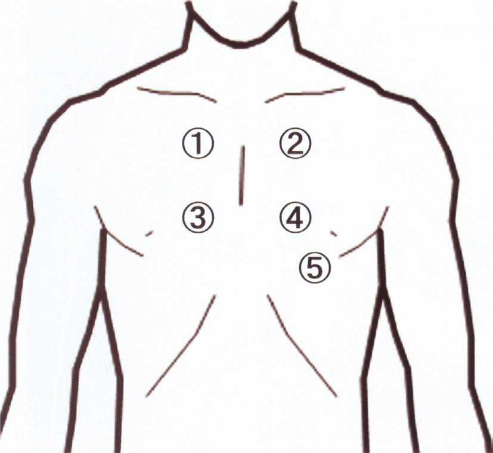
| 部位 | 解剖位置 | 対応弁膜症 |
|---|---|---|
| 大動脈弁領域 | 第2肋間胸骨右縁 | AS雑音最強点 |
| 肺動脈弁領域 | 第2肋間胸骨左縁 | PS・肺高血圧（P₂亢進） |
| 三尖弁領域 | 胸骨左縁第4〜5肋間 | TR・TS |
| 僧帽弁領域 | 心尖部（第5肋間左鎖骨中線） | MR・MS |
| Erb点 | 第3肋間胸骨左縁 | AR・VSD |
| 原因 | 機序 | 特徴 |
|---|---|---|
| 僧帽弁逸脱症（MVP） | 最も多い。弁尖が左房側に突出 | 収縮中期クリック+後収縮期雑音 |
| 感染性心内膜炎 | 弁組織破壊→弁穿孔・逸脱 | 急性MRは特に重篤 |
| 乳頭筋断裂 | 後壁AMI（RCA）で好発 | 急性MR→肺水腫 |
| リウマチ性 | 弁尖・腱索肥厚 | MS合併多い |
| 心拡大（機能性MR） | 弁輪拡大→相対的閉鎖不全 | HFrEFで多い |
| ×AS | MRとは独立した疾患 | |
| 疾患 | 雑音の性質 | 最強点・特徴 |
|---|---|---|
| MR（僧帽弁閉鎖不全） | 全収縮期雑音（blowing型） | 心尖部（→腋窩放散） |
| AS（大動脈弁狭窄） | 収縮期駆出性雑音（ejection type） | 右第2肋間（→頸部放散） |
| MS（僧帽弁狭窄） | 拡張中期ランブル（低調） | 心尖部（左側臥位で聴取しやすい） |
| AR（大動脈弁閉鎖不全） | 拡張期漸減性雑音（高調blowing） | 胸骨左縁第3肋間（Erb点） |
| VSD（心室中隔欠損） | 全収縮期雑音（harsh型） | 胸骨左縁第3〜4肋間 |
| 原因 | 機序・特徴 | 経過 |
|---|---|---|
| 腱索断裂（最多の急性原因） | 自然発生・Marfan症候群・感染性心内膜炎での断裂 | 急性MR |
| 僧帽弁逸脱症（MVP） | 弁尖が左房側に突出（floppy valve） | 慢性MR |
| 乳頭筋断裂 | 後AMI（RCA）→後乳頭筋断裂 | 急性重篤MR |
| 感染性心内膜炎 | 弁組織破壊・穿孔 | 亜急性〜急性 |
| 心拡大（機能性MR） | 弁輪拡大→相対的閉鎖不全 | DCM・HFrEFに多い |
| 治療 | 効果 | 備考 |
|---|---|---|
| 血管拡張薬（ニトロプルシド等） | 後負荷↓→前向き拍出↑・逆流量↓ | 収縮期血圧を維持しながら使用 |
| IABP（大動脈内バルーンパンピング） | 拡張期バルーン膨張→後負荷↓・冠灌流↑ | 緊急手術までのブリッジ |
| ×β遮断薬 | 心拍数↓→逆流時間↑→MR悪化 | 急性MRには禁忌 |
| ×ジギタリス | 急性MRの血行動態改善には貢献小 | |
| 目標 | 収縮期BP維持+前向き拍出量確保 | 緊急手術へのブリッジ |
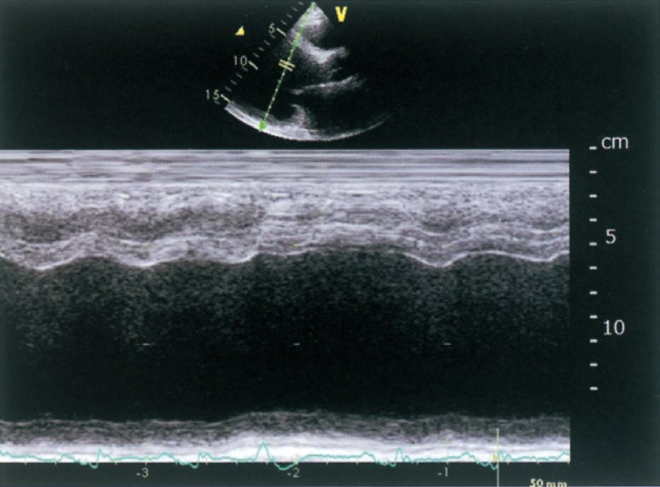
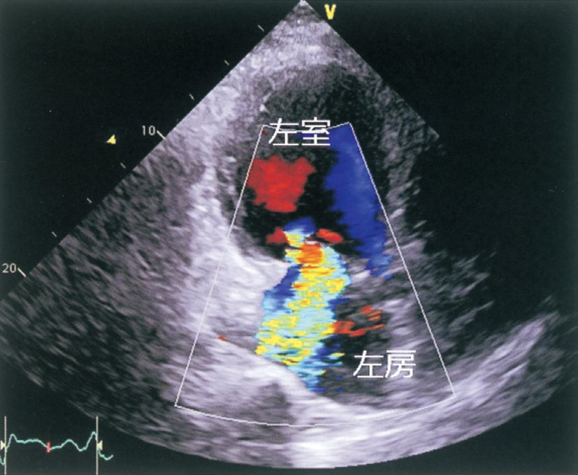
| 体位 | 増強する所見 | 対応疾患 |
|---|---|---|
| 前傾座位（leaning forward） | 心基部拡張期雑音（AR）が増強 | 胸骨左縁第3肋間（Erb点） |
| 左側臥位 | MS（拡張中期ランブル）・S3・S4が明瞭に | 心尖部を胸壁に近づける |
| 仰臥位 | MR・TR・VSD雑音（体位影響少） | |
| 立位・Valsalva | HOCM雑音が増強（前負荷↓→流出路閉塞↑） | |
| しゃがみ込み | HOCM雑音が減弱（前負荷↑） |
| 項目 | 内容 | 備考 |
|---|---|---|
| 機械弁 | ワルファリン終生継続（INR 2.5〜3.5） | 生体弁より耐久性高（20〜30年以上） |
| 生体弁 | ワルファリンは術後3か月で中止可 | 10〜15年で劣化→再手術 |
| IE予防（抜歯時） | 抗菌薬予防投与（アモキシシリン） | 両弁種で推奨 |
| ×「機械弁はIE少ない」 | 生体弁より機械弁の方がIEリスクが高い | 誤った記述 |
| ×「観血的処置禁忌」 | 抗菌薬予防で施行可能 | 禁忌ではない |
| 所見 | 内容 | 備考 |
|---|---|---|
| Austin Flint雑音 | 拡張期ランブル（逆流血液が前尖を揺らす） | MSと鑑別必要 |
| 脈圧増大 | 収縮期圧↑・拡張期圧↓（水撃脈・Corrigan脈） | 正常50mmHg→>80mmHg |
| Quincke徴候 | 爪甲の毛細血管の拍動（赤⇔白） | 末梢血管徴候 |
| Duroziez徴候 | 大腿動脈での「往復」雑音 | |
| de Musset徴候 | 脈に同期した頭部の動き（うなずき） | |
| Traube徴候 | 大腿動脈での銃声音 |
| 項目 | 内容 | 備考 |
|---|---|---|
| AVR（大動脈弁置換術）適応 | 症状あり（狭心症・失神・心不全）OR EF低下 | 症状出現→平均生存2〜3年 |
| 3大症状と予後 | 心不全（最悪2年）>失神（3年）>狭心症（5年） | |
| 弁選択 | 70歳以上→生体弁（ワルファリン不要）、70歳未満→機械弁考慮 | |
| TAVI | 高齢・高リスク患者のAS→経カテーテル的 | 開胸手術困難例に |
| ×オフポンプ | AS手術は人工心肺が必要（弁膜の精密操作が必要） |
| 所見 | 機序 | 臨床的意義 |
|---|---|---|
| 狭心痛の出現 | 冠動脈血流相対的不足（LV仕事量↑） | →手術検討 |
| 心尖拍動の左下方偏位 | 左室容量負荷→左室拡大（拡張型） | →手術検討 |
| ×脈圧の減少 | AR→脈圧増大（収縮期↑・拡張期↓） | 脈圧減少はAS/MS |
| ×拡張期雑音の高調化 | 低調化・短縮が進行を示唆 | |
| ×爪床血管拍動の消失 | 末梢血管徴候は消失しない（むしろ増強） |
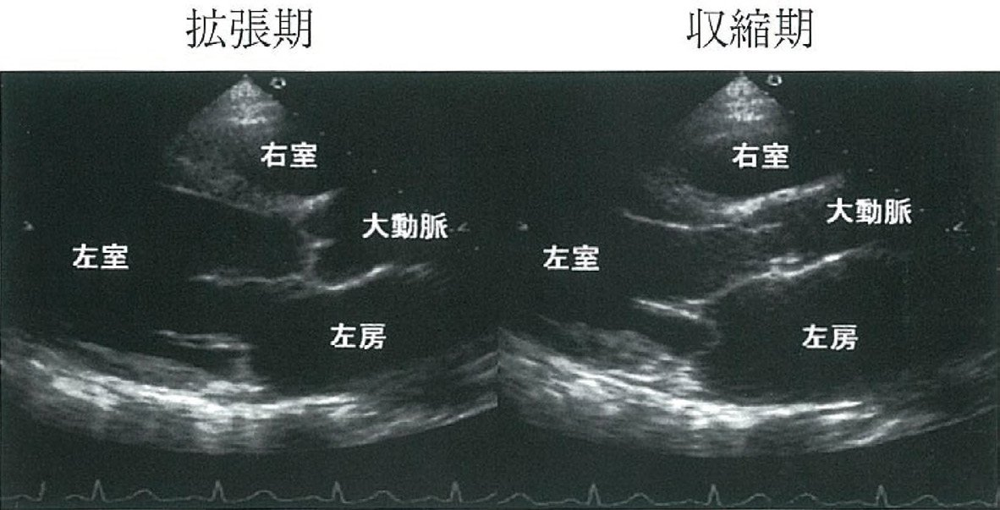
| 項目 | 内容 | 備考 |
|---|---|---|
| 3大症状（予後) | 心不全（2年）>失神（3年）>狭心症（5年） | 症状出現→AVR適応 |
| 聴診 | 収縮期駆出性雑音（右第2肋間）・A₂↓・S4 | 頸部へ放散 |
| 脈（重要） | 小脈（parvus）・遅脈（tardus） | =正反対のARと逆 |
| 心電図 | 左軸偏位・LVH（高電位） | |
| 手術適応 | 症状あり・EF<50%・弁口面積<1.0cm² | TAVI or AVR |
| ×速脈 | ARの所見（弾丸様脈） | ASは小脈・遅脈 |
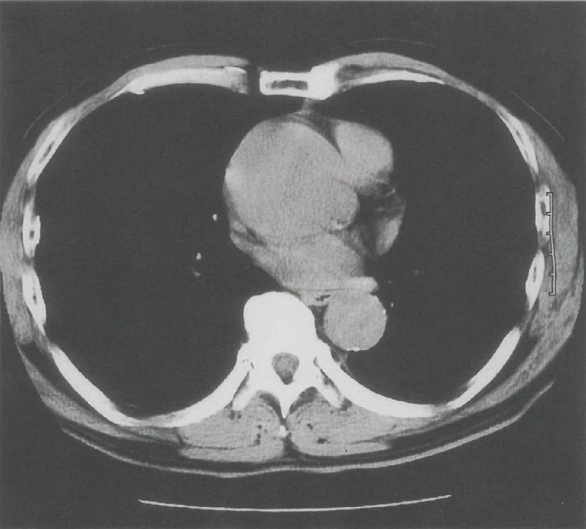
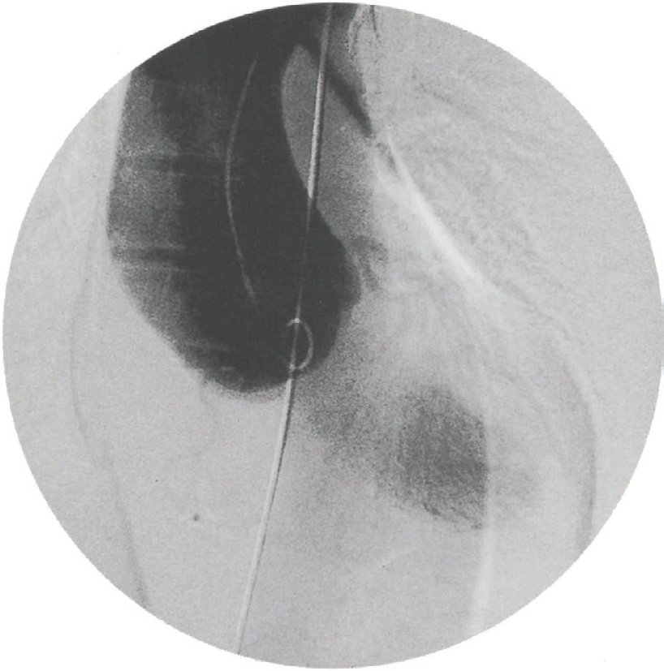
| 所見 | 内容 |
|---|---|
| 第1音（S1）亢進 | 弁葉が硬くなって閉鎖時に大きな音（石灰化高度では逆に↓） |
| 開放音（OS：Opening Snap） | 拡張早期、高調音。S2-OSの間隔↓→重症 |
| 拡張中期ランブル | 低調なゴロゴロ音、心尖部、左側臥位で聴取しやすい |
| ×収縮期雑音 | MSは拡張期病変→収縮期雑音は通常なし（MR合併時は除く） |
| 病態 | 機序 | 臨床症状 |
|---|---|---|
| 左室容量負荷 | 逆流量だけ左室仕事量増加 | 左室拡大・肥大→HFrEF |
| 左房拡大 | 慢性的に左房拡大 | Af（心房細動）の原因 |
| PCWP上昇 | 肺静脈圧上昇→肺水腫 | PND・起坐呼吸 |
| 抗凝固療法 | Af合併→脳塞栓予防 | ワルファリンまたはDOAC |
| 項目 | AS | AR |
|---|---|---|
| AS | AR | |
| 雑音 | 収縮期駆出性 | 拡張期漸減性 |
| 最強点 | 右第2肋間 | 左第3〜4肋間（Erb点） |
| 脈 | 遅脈（parvus et tardus） | 速脈・水撃脈 |
| 脈圧 | 狭小 | 増大 |
| 予後不良症状 | 失神<狭心痛<心不全 | 心不全 |
| 種類 | 特徴 | 検査 |
|---|---|---|
| 不整脈 | 突然・短時間・体位無関係 | 心電図・ホルター |
| AS（流出路狭窄） | 労作時・起立後 | 心エコー |
| 血管迷走神経 | 起立・ストレス後・前駆症状あり | 誘発試験（ティルト） |
| てんかん | 口から血・舌咬傷・30分もうろう | 脳波・頭部CT |
| 原因 | 機序 | 補足 |
|---|---|---|
| MRの原因 | ||
| 急性心筋梗塞（AMI） | 乳頭筋断裂・乳頭筋機能不全 | 後壁梗塞（RCA）で多い |
| 拡張型心筋症 | 心拡大→弁輪拡大（機能性MR） | |
| 感染性心内膜炎 | 弁組織破壊・穿孔 | |
| 僧帽弁粘液変性 | 弁逸脱（MVP） | 最多原因 |
| ×ARの原因 | ||
| 上行大動脈瘤 | 大動脈基部拡大→大動脈弁輪拡大→AR | Marfan症候群など |
| 所見 | 特徴 |
|---|---|
| Janeway病変 | 手掌・足底の無痛性紅斑（血管現象） |
| Osler結節 | 指尖部の有痛性結節（免疫現象） |
| Roth斑 | 眼底の白色中心部を持つ出血斑（免疫現象） |
| 爪下出血（線状） | 線状出血→血管塞栓 |
| 重症度 | 弁口面積 | 圧較差 | 血流速度 |
|---|---|---|---|
| 重症度 | 弁口面積 | 弁口圧較差 | 血流速度 |
| 軽症 | >1.5cm² | <25mmHg | <3m/秒 |
| 中等症 | 1.0〜1.5cm² | 25〜40mmHg | 3〜4m/秒 |
| 重症 | <1.0cm² | >40mmHg | >4m/秒 |
| 合併症 | 原因 | 特徴 |
|---|---|---|
| 機能性MR | LAD梗塞→乳頭筋機能不全 | 慢性経過・心拡大で増悪 |
| 乳頭筋断裂MR | 後壁AMI（RCA）→急性MR | AMI後2〜7日・ショック |
| VSD | 前壁AMI（LAD）→急性期 | AMI後2〜7日・両心不全 |
| 心タンポナーデ | 心破裂 | 急性期・緊急心嚢ドレナージ |
| 弁膜症 | エコー所見 | 重症度指標 |
|---|---|---|
| MR | カラードプラ：左室→左房逆流 | 有効逆流口面積（EROA） |
| MS | PHT（圧半減時間）法 | 弁口面積・弁肥厚・石灰化 |
| AS | CW-ドプラ：最高血流速度 | 弁口面積（連続の方程式） |
| AR | カラードプラ：大動脈→左室逆流 | 逆流幅/LVOTd比 |
| 特徴 | せん妄 | 認知症 |
|---|---|---|
| せん妄 | 認知症 | |
| 発症 | 急性（時間〜日単位） | 緩徐（月〜年単位） |
| 意識 | 変動 | 清明（初期） |
| 注意力 | 著しく低下 | 比較的保たれる |
| 夜間悪化 | あり（日内変動） | 日没症候群 |
| 誘因 | 入院・感染・低酸素 | なし |
| 聴診所見 | 特徴 | 疾患 |
|---|---|---|
| 心膜摩擦音 | 収縮期と拡張期の両方 | 収縮性心膜炎×→急性心膜炎○ |
| opening snap（OS） | 拡張早期（A₂後） | 僧帽弁狭窄症（MS）×MR |
| 全収縮期雑音 | ブローイング音 | ×MS→MR・TR・VSD |
| 収縮期駆出性雑音 | 菱形雑音 | AS・PS○ |
| 拡張期漸減性雑音 | ブローイング | AR（大動脈弁閉鎖不全） |
| 拡張中期ランブル | 低調・ゴロゴロ | MS（僧帽弁狭窄） |
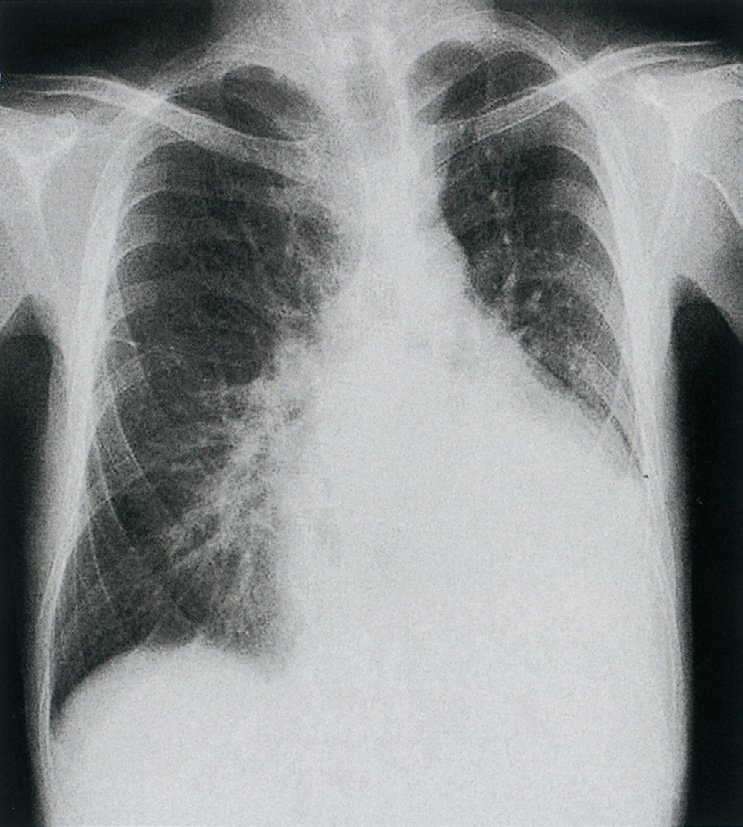
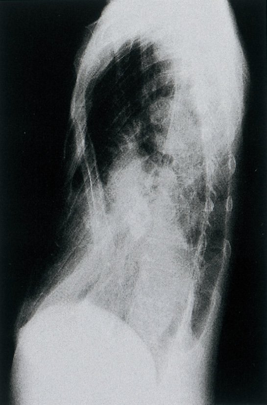
| 原因 | 疾患例 | 機序 |
|---|---|---|
| 弁異常 | 先天性（二尖弁）・リウマチ性・感染性心内膜炎 | |
| 大動脈基部拡大 | Marfan症候群・大動脈瘤・大動脈解離 | →弁輪拡大 |
| 高血圧性 | 長年の高血圧→大動脈拡張 | |
| 梅毒性 | 上行大動脈炎→弁輪拡大 | （現在は稀） |
| 原因 | 機序 | 特徴 |
|---|---|---|
| MRの原因 | ||
| 乳頭筋断裂 | AMI後（後壁梗塞） | 急性MR |
| リウマチ熱 | 弁尖・腱索障害 | 慢性MR |
| 僧帽弁逸脱 | 弁尖の腱索弛緩 | MVP |
| 感染性心内膜炎 | 弁破壊 | 急性or慢性 |
| ARの原因（MR原因でない） | ||
| 急性大動脈解離 | 大動脈弁輪拡大・弁支持組織破壊 | Stanford A→緊急手術 |
| 上行大動脈瘤 | 大動脈基部拡大 | 慢性AR |
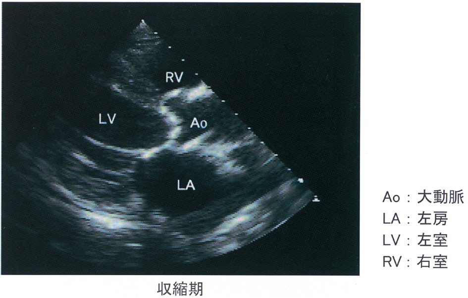
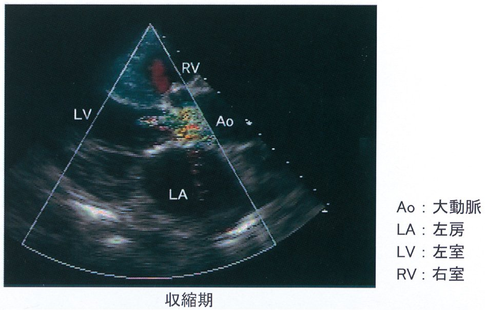
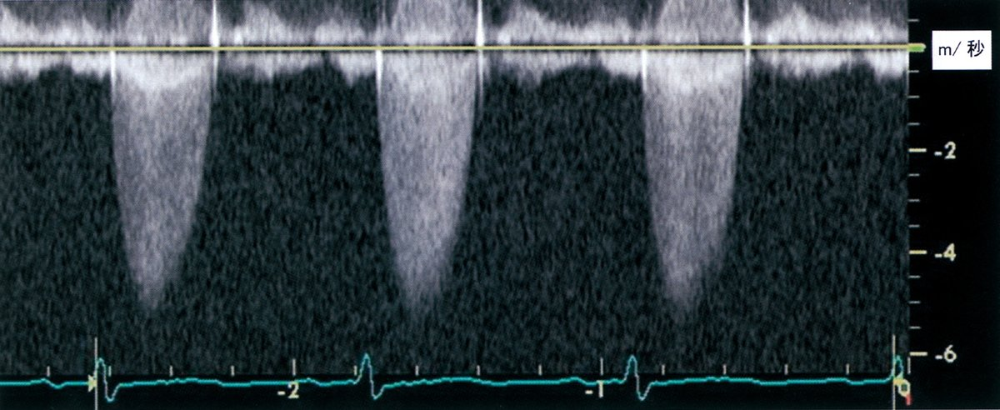
| 選択肢 | 理由 | |
|---|---|---|
| ×a：中心静脈圧低下 | MRでは左房圧↑→肺高血圧→CVP上昇 | |
| ×b：右→左シャント | MRには心内シャントなし | |
| ×c：左室流出路狭窄 | LVOTO→HCM（肥大型心筋症） | |
| ×d：左室の圧負荷 | MRは容量負荷（圧負荷はASが代表） | |
| ○e：左房の容量負荷増大 | 逆流血液が左房を充満 | 正答 |
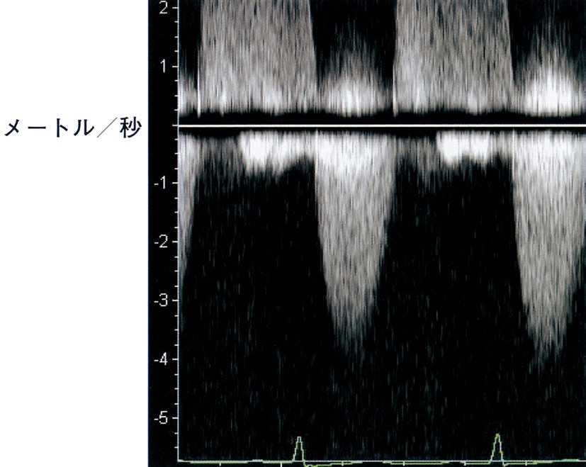
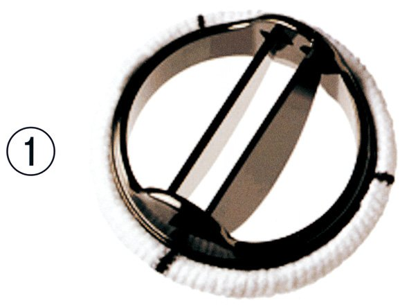
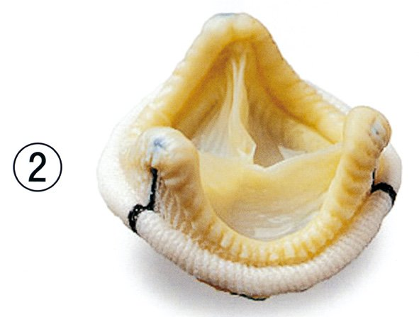
| 項目 | 機械弁 | 生体弁 |
|---|---|---|
| 機械弁（①） | 生体弁（②） | |
| 耐久性 | 半永久的（20年以上） | 10〜15年で劣化 |
| 抗凝固薬 | 生涯ワルファリン必要 | 不要（術後3か月のみ） |
| 再手術 | 不要（通常） | 劣化後に再手術 |
| 妊婦・挙児希望 | 禁忌（催奇形性） | 推奨 |
| 高齢者（70歳超） | 過抗凝固→出血リスク | 推奨 |
| 脈の種類 | 関連疾患 | 特徴 |
|---|---|---|
| 遅脈（pulsus tardus） | AS：立ち上がり遅い | 小脈とセット（parvus et tardus） |
| 大脈・速脈（pulsus magnus） | AR：脈圧増大・速い立ち上がり | 水撃脈（Corrigan） |
| 奇脈（pulsus paradoxus） | 心タンポナーデ・収縮性心膜炎 | 吸気時>10mmHg低下 |
| 交互脈（pulsus alternans） | 重症左心不全（HFrEF） | 心室機能低下 |
| 二段脈 | 期外収縮が2拍毎 | 上室・心室性 |
| 疾患 | 機序 | 対策 |
|---|---|---|
| AS（重症） | 労作時→心室細動・心室頻拍 | 症状出現→早期手術 |
| HOCM | 若年競技者の突然死 | ICD適応検討 |
| 長QT症候群 | torsade de pointes | β遮断薬・ICD |
| Brugada症候群 | 夜間・安静時のVf | ICD |
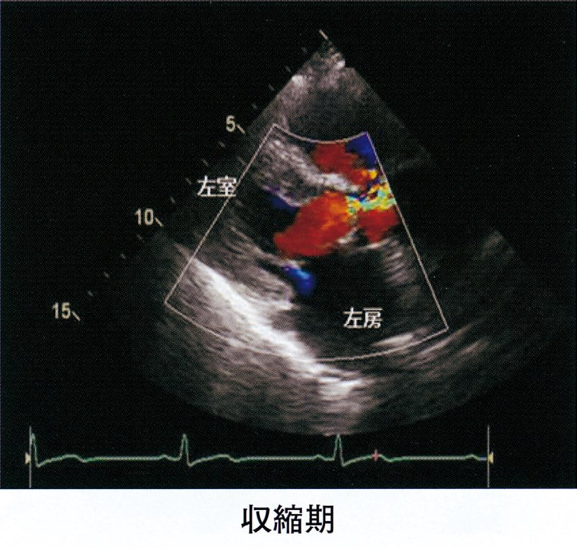
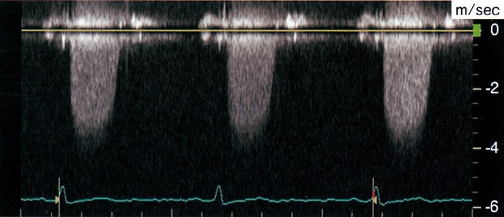
| 疾患 | 聴診所見 | 正誤 |
|---|---|---|
| 肺高血圧症 | Ⅱ音の亢進（P₂亢進） | ○（肺動脈圧↑→P₂亢進） |
| ×AR→全収縮期雑音 | ARは拡張期漸減性雑音（blowing） | 誤り→正答 |
| ASD（心房中隔欠損） | 拡張期ランブル（肺血流増加→相対的MS） | ○ |
| 拡張型心筋症（DCM） | 奔馬調律（S₃） | ○（心筋機能低下） |
| MR（僧帽弁閉鎖不全） | Ⅲ音（S₃） | ○（容量負荷→S₃） |
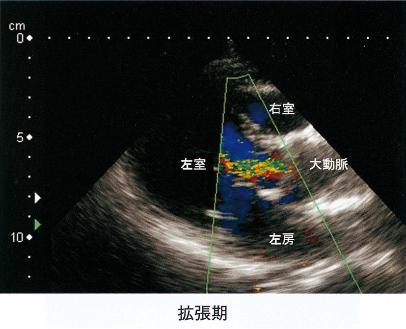
| 疾患 | 増強する体位・操作 | 聴取部位 |
|---|---|---|
| AR（拡張期雑音） | 前傾座位・呼気止め | Erb点（第3〜4肋間左縁） |
| MS（拡張中期ランブル） | 左側臥位・軽い運動後 | 心尖部 |
| HOCM（流出路狭窄） | 立位・Valsalva（静脈還流↓） | 胸骨左縁 |
| TR（三尖弁逆流） | 吸気（静脈還流↑） | Rivero-Carvallo徴候 |
| 聴診所見 | 特徴 | 補足 |
|---|---|---|
| Ⅰ音亢進 | 弁が閉鎖時にバタンと→亢進 | 弁可動性あるとき |
| opening snap（OS） | A₂音の直後（0.04〜0.12秒） | 弁可動性あるとき |
| 拡張中期低調性ランブル | 低周波・ゴロゴロ音 | 心尖部・左側臥位で聴取 |
| ×収縮中期クリック | MVP（逸脱）の所見 | MSとは別 |
| ×収縮期駆出性雑音 | AS・PS | |
| ×拡張早期高調性雑音 | AR（blowing音） |
| 所見 | 機序 | 特徴 |
|---|---|---|
| 脈圧増大 | 収縮期圧↑・拡張期圧↓ | 水撃脈（Corrigan脈） |
| to and fro murmur | 収縮期（駆出）+拡張期（逆流）雑音 | Erb点で聴取 |
| Austin Flint雑音 | 前尖が逆流血で揺れる→拡張期ランブル | MSとの鑑別（OS前にあるか） |
| 末梢血管徴候 | Quincke徴候・Musset徴候・De Musset徴候・頭部のうなずき | |
| ×奇脈 | 心タンポナーデ・収縮性心膜炎 | ARとは無関係 |
| ×固定性分裂 | ASD |
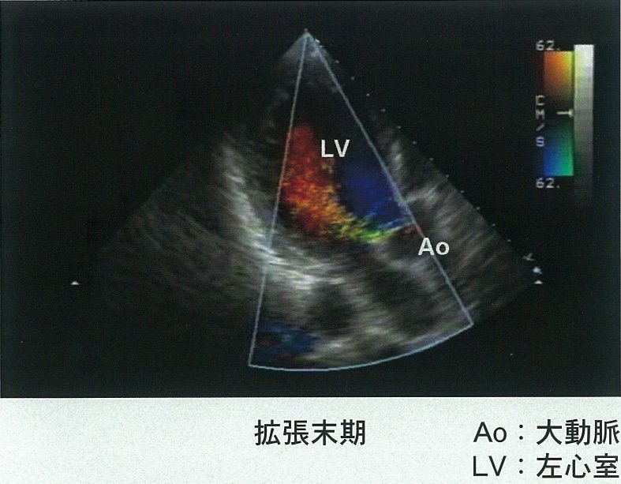
| 所見 | 機序 | |
|---|---|---|
| みられる（AS） | ||
| Ⅳ音（S₄） | 左室肥大→コンプライアンス↓ | ○ |
| 振戦（thrill） | 重症AS→触診で収縮期振動 | ○（右第2肋間） |
| 遅脈 | pulsus tardus et parvus | ○ |
| 頸部放散する収縮期雑音 | 右第2肋間→頸部 | ○ |
| ×脈圧の増大 | ASでは脈圧縮小 | →ARの所見 |
| 選択肢 | 理由 | 補足 |
|---|---|---|
| ×ａ：Ⅰ音亢進→ASD | Ⅰ音亢進は僧帽弁狭窄症（MS）の所見 | ASD=固定性Ⅱ音分裂 |
| ×ｂ：連続性雑音→TR | TR=全収縮期雑音（吸気増強） | 連続性雑音=PDA・AV瘻 |
| ○ｃ：OS→MS | 弁開放時→opening snap | A₂後の高調音 |
| ○ｄ：収縮中期クリック→MVP | 弁逸脱時の緊張音 | Valsalva・立位で前方移動 |
| ×ｅ：Austin Flint→MS | Austin Flint雑音はAR（逆流血が前尖を揺らす） | MSとの鑑別が必要 |
| 体位 | 変化 |
|---|---|
| 立位・Valsalva（静脈還流↓） | 左室容量↓→逸脱早期→クリック前方（早く）移動・雑音延長 |
| 座位・臥位（静脈還流↑） | 左室容量↑→逸脱後期→クリック後方（遅く）移動・雑音短縮 |
| 手術名 | 内容 | 適応疾患 |
|---|---|---|
| Ross手術 | 肺動脈弁を大動脈弁位に移植 | 小児ASに適応 |
| Bentall手術 | 大動脈基部+上行大動脈+大動脈弁置換 | Marfan・大動脈瘤 |
| Rastelli手術 | 右室→肺動脈経路再建（導管） | TGA・TOFの根治術 |
| 弁形成術（annuloplasty等） | 僧帽弁修復（輪縫縮+腱索形成） | MRの第一選択 |
| 左室縫縮術（Dor手術） | 左室瘤切除+形成術 | AMI後左室瘤 |
| 選択肢 | 理由 | |
|---|---|---|
| ○ａ：Ⅰ音亢進→MS | MSでは弁可動性があると僧帽弁閉鎖時に亢進 | 正答 |
| ×ｂ：Ⅱ音呼吸性分裂→ASD | ASD=固定性Ⅱ音分裂（呼吸性でない） | 誤り |
| ×ｃ：僧帽弁開放音→HCM | OS=MS（僧帽弁狭窄）の所見 | 誤り |
| ×ｄ：拡張期漸減性雑音→PS | 拡張期漸減性雑音=AR（大動脈弁）、PSは収縮期 | 誤り |
| ○ｅ：吸気増強→TR | 吸気→胸腔陰圧→静脈還流↑→右心流量↑→TR雑音↑ | 正答 |
| 所見 | 特徴 | 補足 |
|---|---|---|
| 拡張期雑音（拡張中期ランブル） | 低調・ゴロゴロ音 | 心尖部・左側臥位で増強 |
| opening snap（OS） | A₂直後の高調音 | 弁可動性がある時に聴取 |
| Ⅰ音亢進 | 弁閉鎖時の高音 | 石灰化高度で消失 |
| ×収縮期雑音 | MR・TR・VSD | MS単独では聴取しない |
| ×連続性雑音 | PDA・動脈瘻 | |
| ×Ⅱ音固定性分裂 | ASD |
| 選択肢 | 理由 | 補足 |
|---|---|---|
| ×頻脈→甲状腺機能低下症 | 甲状腺機能低下症=徐脈 | 頻脈=甲状腺機能亢進症 |
| ×徐脈→脱水症 | 脱水=頻脈（代償性） | 徐脈=甲状腺機能低下・高K血症 |
| ×遅脈→ASD | 遅脈=AS（大動脈弁狭窄症） | ASD≠遅脈 |
| ○速脈→AR | 収縮期急速駆出→速い立ち上がり（水撃脈） | 正答 |
| ×絶対性不整脈→VT | 絶対性不整脈=Af（心房細動） | VT=規則的頻脈 |
| 所見 | 理由 | 補足 |
|---|---|---|
| ×Ⅰ音増強 | MRではⅠ音減弱（閉鎖不全→閉鎖音弱い） | Ⅰ音亢進=MS |
| ○Ⅲ音（S₃） | 左室容量負荷→急速充満→S₃ | 心尖部で聴取 |
| ○汎（全）収縮期雑音 | 収縮期全体のblowing音→腋窩放散 | 心尖部最強 |
| ×拡張中期雑音 | MSの拡張中期ランブル | MRとは別 |
| ×Austin Flint雑音 | ARの所見（逆流血が前尖を揺らす） | MRとは別 |